layout: true class: center, middle --- # Open and Reproducible Neuroscience using Python 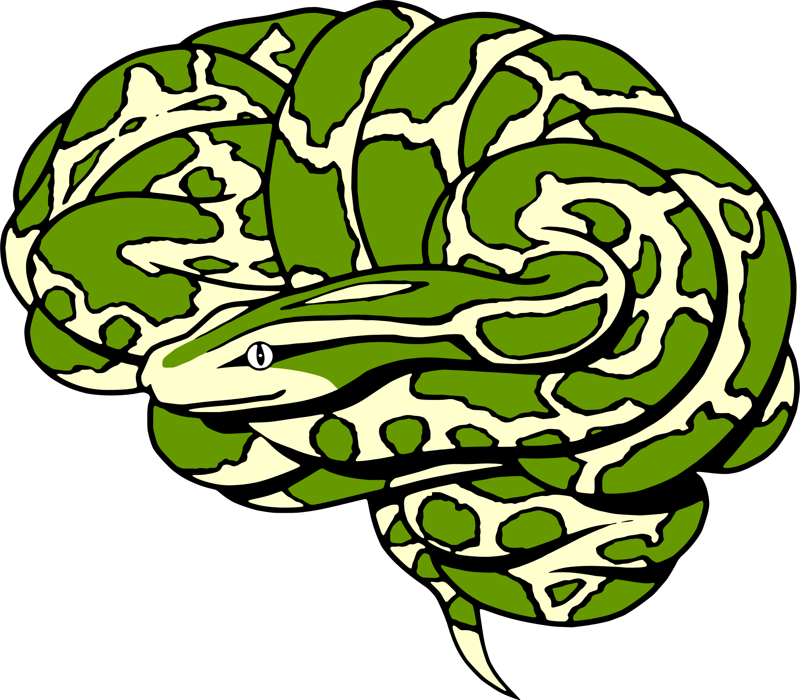 ## Frankfurt, May 2018 ##### License: CC0 | Image credit: Arno Klein --- class: center, middle #But...why? -- #Let us tell you some stories... -- #### this presentation HEAVILY "borrows" from [Chris Gorgolewski's presentations on the respective topics](https://www.slideshare.net/chrisfilo1/towards-open-and-reproducible-neuroscience-in-the-age-of-big-data) --- class: center, middle .left-column[ #hubble telescope legacy ] .right-column[ 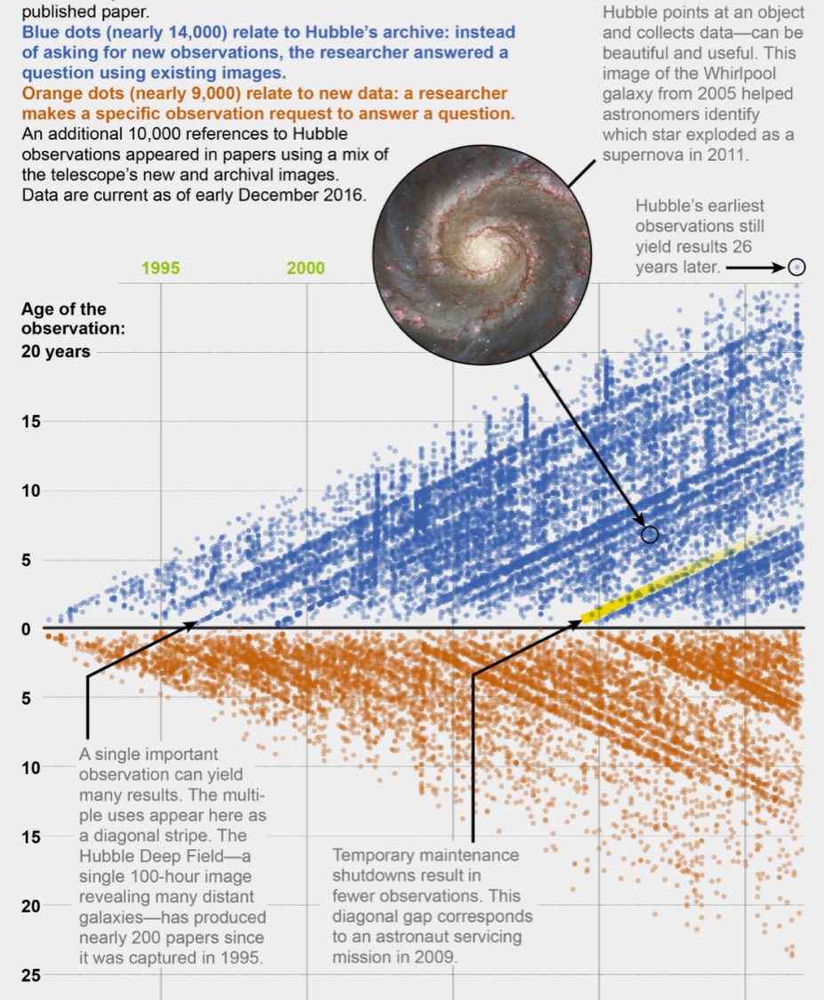 ] #####https://www.scientificamerican.com/article/how-old-observations-are-building-hubbles-legacy/ --- class: center, middle .left-column[ #ImageNet ] 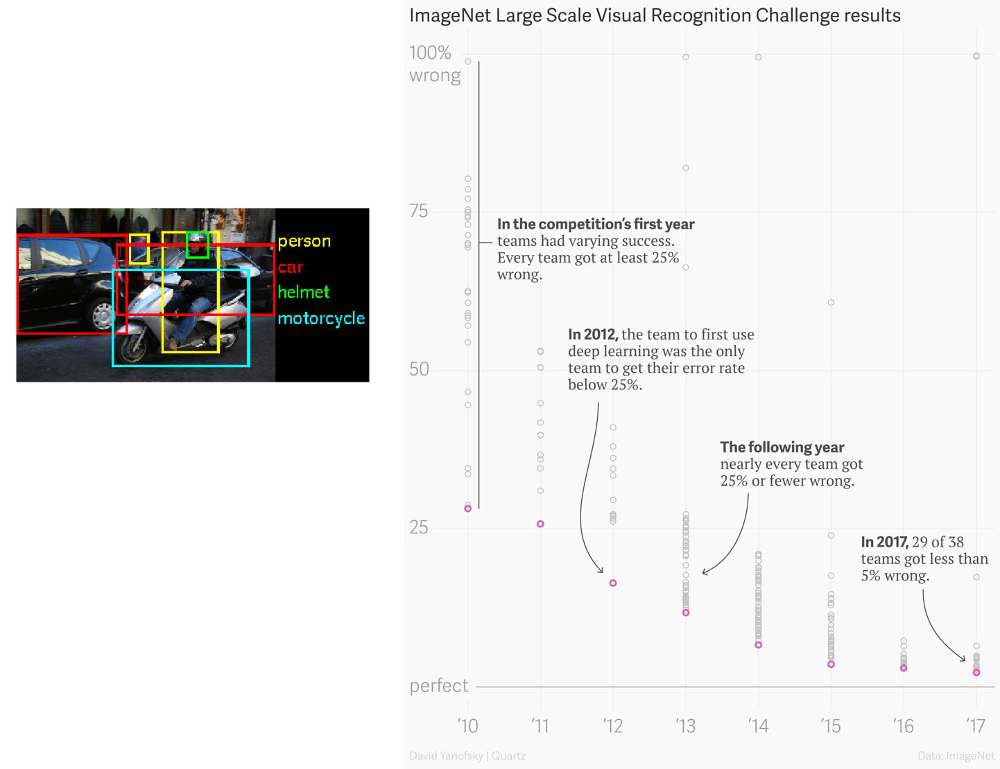 #####https://qz.com/1034972/the-data-that-changed-the-direction-of-ai-research-and-possibly-the-world/ --- class: center, middle .left-column[ #Elon Musk & Tesla's electronic cars ] .right-column[ 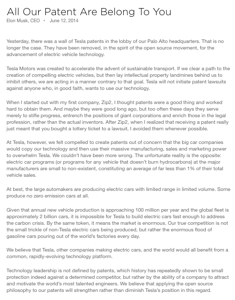 #####https://www.tesla.com/blog/all-our-patent-are-belong-you ] --- class: center, middle .left-column[ #google brain ] 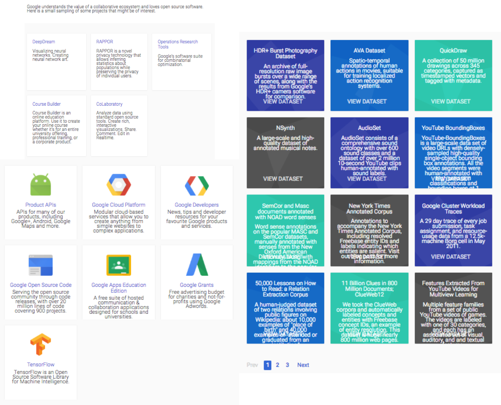 #####https://research.google.com/research-outreach.html#/research-outreach --- class: center, middle #Who disovered the structure of the DNA? --- class: center, middle #Rosalind Franklin and photograph 51 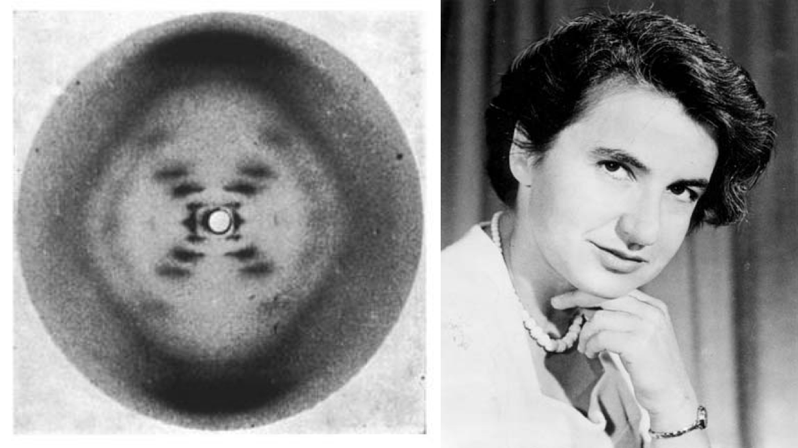 --- ### But...we're good, eh? -- ### Hard no! --- ### science has a problem! 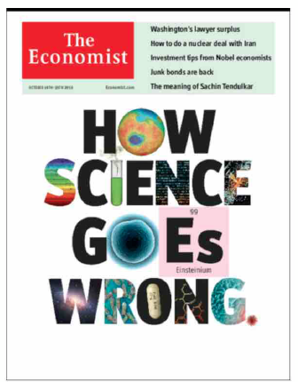 #####<small>https://www.economist.com/news/leaders/21588069-scientific-research-has-changed-world-now-it-needs-change-itself-how-science-goes-wrong</small> --- ### science has a problem! 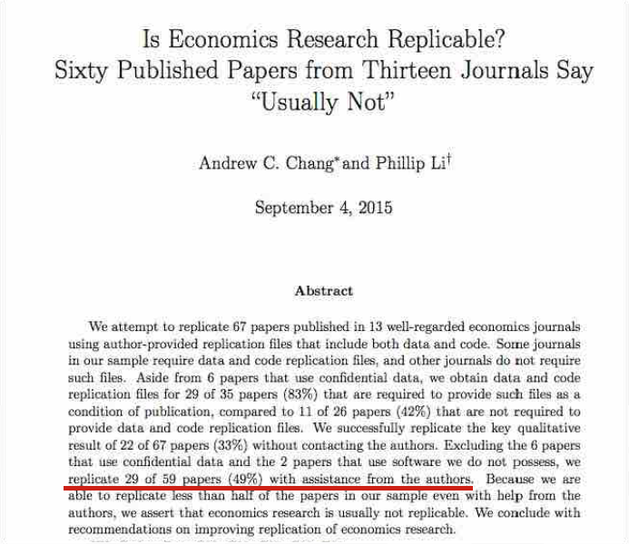 --- ### science has a problem! 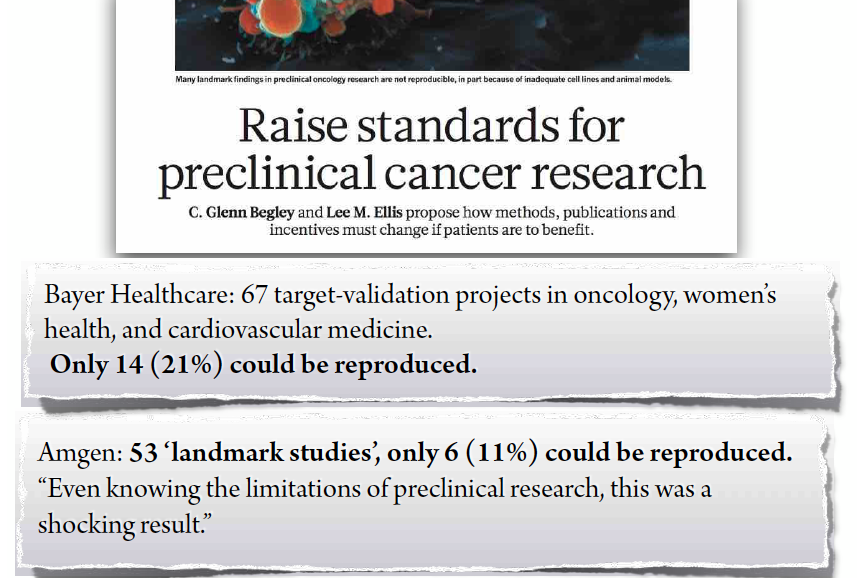 #####<small>Begley, C. G., & Ellis, L. M. (2012). Drug development: Raise standards for preclinical cancer research. Nature, 483, 531–533. doi:10.1038/483531a; Prinz, F., Schlange, T., & Asadullah, K. (2011). Believe it or not: how much can we rely on published data on potential drug targets? Nature Reviews Drug Discovery, 10, 712–712. doi:10.1038/nrd3439-c1</small> --- ### (neuro)science (we) has a problem! 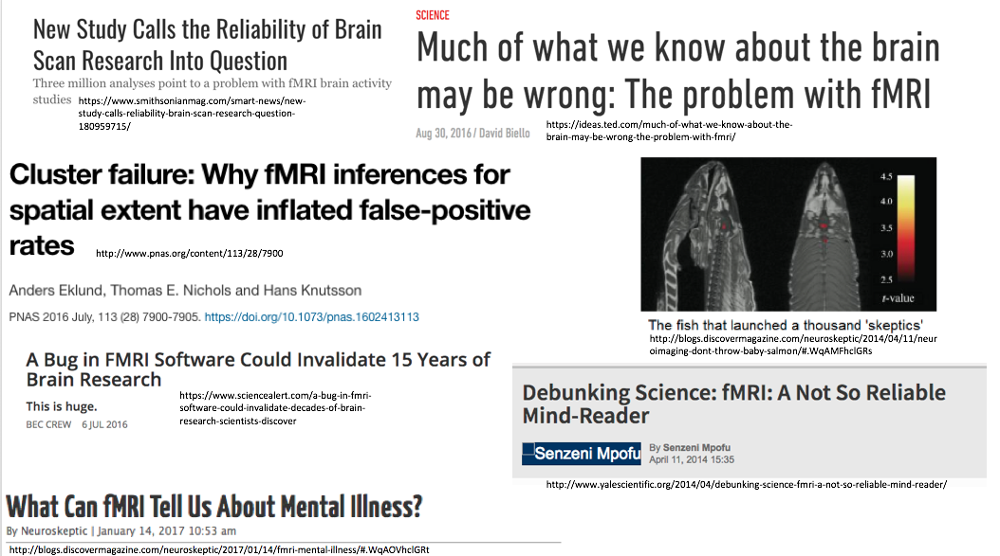 --- ### (neuro)science (we) has a problem! 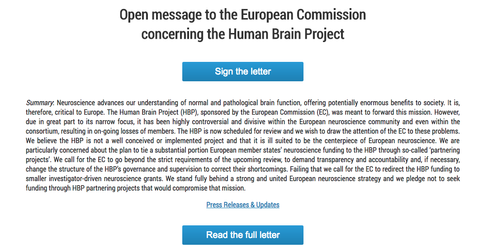 --- class: center, middle .left-column[ #### hack your way to scientific glory ] .right-column[ p-hacking works, we do p-hack, and “questionable research practices” (QRPs) / p-hacking increase the rate of non-replicable falsepositives to an substantial amount ] --- class: center, middle .left-column[ #### hack your way to scientific glory #### bullshit asymmetry ] .right-column[ p-hacking works, we do p-hack, and “questionable research practices” (QRPs) / p-hacking increase the rate of non-replicable falsepositives to an substantial amount become a scientific rockstar with n=20 nature, neuron, etc. publications ⥊ you need a 7000 participant-multilab-collaboration to clean up the mess (+ bonus: get a reputation as a boring/second-stringer/uninspired/“flairless” replicator) ] --- class: center, middle .left-column[ #### hack your way to scientific glory #### bullshit asymmetry #### replication / credibility crisis ] .right-column[ p-hacking works, we do p-hack, and “questionable research practices” (QRPs) / p-hacking increase the rate of non-replicable falsepositives to an substantial amount become a scientific rockstar with n=20 nature, neuron, etc. publications ⥊ you need a 7000 participant-multilab-collaboration to clean up the mess (+ bonus: get a reputation as a boring/second-stringer/uninspired/“flairless” replicator) large scale replication projects reveal that probably less than half of our findings can be replicated; even “bulletproof” effects with hundreds of supporting studies break down. ] --- class: center, middle .left-column[ #### hack your way to scientific glory #### bullshit asymmetry #### replication / credibility crisis #### who pays? ] .right-column[ p-hacking works, we do p-hack, and “questionable research practices” (QRPs) / p-hacking increase the rate of non-replicable falsepositives to an substantial amount become a scientific rockstar with n=20 nature, neuron, etc. publications ⥊ you need a 7000 participant-multilab-collaboration to clean up the mess (+ bonus: get a reputation as a boring/second-stringer/uninspired/“flairless” replicator) large scale replication projects reveal that probably less than half of our findings can be replicated; even “bulletproof” effects with hundreds of supporting studies break down. society pays at least twice ] ####*[Felix Schönbrodt, talk at Uni Mainz, 2017](https://osf.io/5zbgc/) --- class: center, middle ## What is happening? -- (un)intentional mistakes </br> </br> -- the garden of forking paths </br> </br> -- questionable research practices / p-hacking </br> </br> -- fraud </br> </br> -- publication bias </br> </br> ####*[Felix Schönbrodt, talk at Uni Mainz, 2017](https://osf.io/5zbgc/) --- class: center, middle ##Are we lost? -- ##What can we do? --- class: center, middle ##Open (neuro)science as one (by far not the only) answer --- class: center, middle ##Open (neuro)science as one (by far not the only) answer 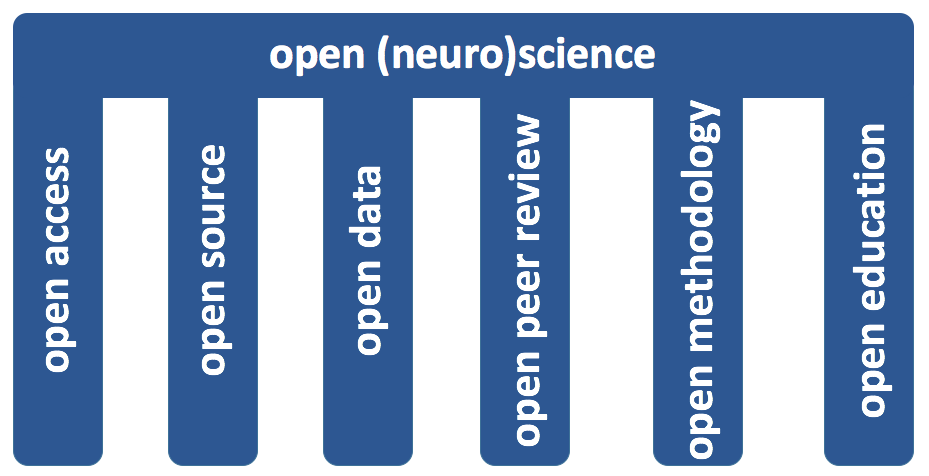 --- class: center, middle ##Open (neuro)science as one (by far not the only) answer 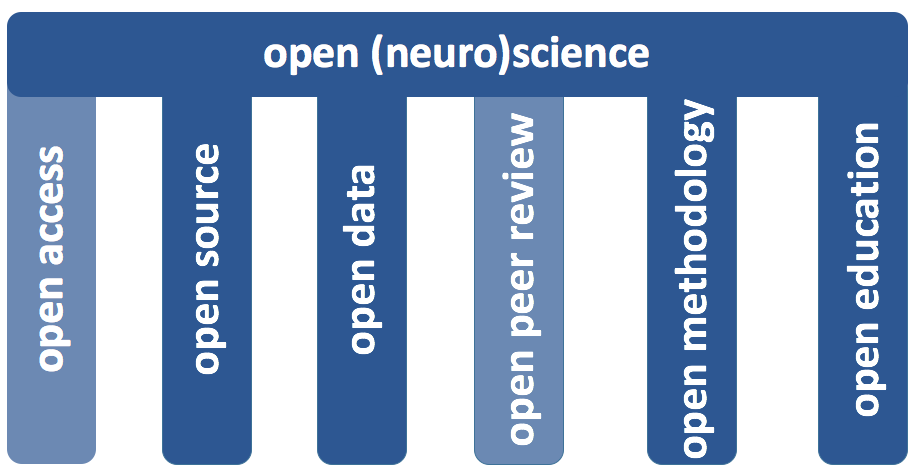 ##what we cover --- class: center, middle ##transparency open data + open code + provenance = transparency ##reproducibility data snapshots + software containers = reproducibility ######[*Gorgolewski, K. J., talk at MPI Leipzig, December 2017](https://osf.io/vpxrj/)</small> --- class: center, middle ##benefits of open (neuro)science .left-column[ #### faster #### cheaper #### higher quality #### more inclusive & competitive ] .right-column[ going from hypothesis to answer in a couple of weeks ~$3 mln cost of reacquiring data for each of the reuses of OpenfMRI datasets (2017) </br> 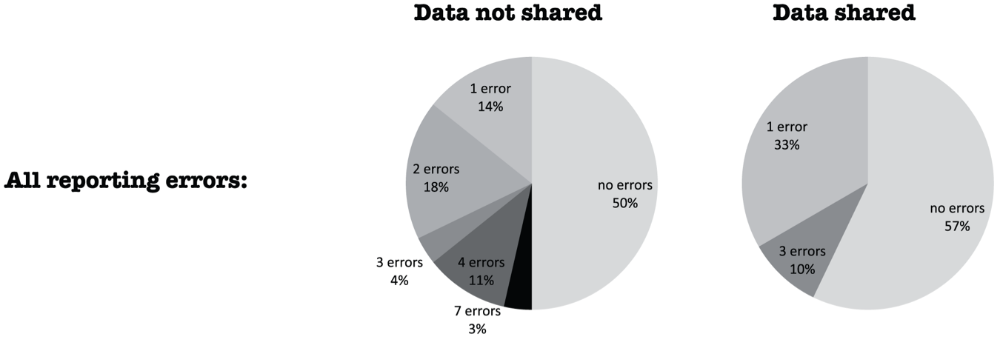 ######<small>Wicherts JM, Bakker M, Molenaar D (2011) Willingness to Share Research Data Is Related to the Strength of the Evidence and the Quality of Reporting of Statistical Results. PLoS ONE 6(11): e26828. doi: 10.1371/journal.pone.0026828</small> same datasets are available to all researchers .left[<small>[*Gorgolewski, K. J., talk at MPI Leipzig, December 2017](https://osf.io/vpxrj/)</small>] ] --- name: inverse layout: true class: center, middle, inverse --- # Let's start! # Questions?